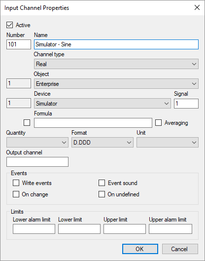
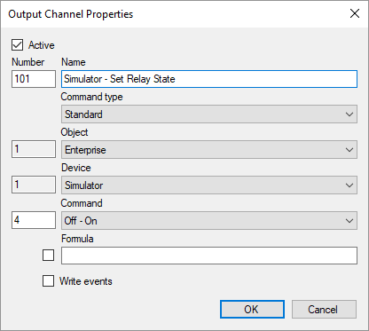
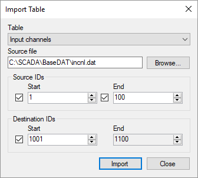
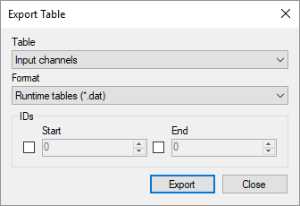
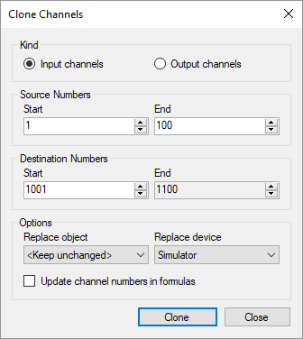

Tune Up Configuration Database
Configuration Database Structure
The configuration database is a structured description of the entire automated system. The applications included in Rapid SCADA use the information from the configuration database in conjunction with their settings.
The configuration database is edited using the Administrator application as part of a project. The edited instance of the configuration database is in XML file format. When a project is uploaded to a server for execution, the configuration database is converted into a special DAT format.
The configuration database consists of tables, which in turn are composed of columns and rows. Each table belongs to one of the following groups:
- System. This group contains the tables which define a configuration of a particular automated system.
- Dictionaries. This group contains the auxiliary tables. In most cases changing of these tables is not needed.
The following table describes the configuration database tables.
| Table Name |
Description |
| System Group |
| Objects |
Contains logical objects that are used to structure information in the system. Objects can be interpreted as locations |
| Communication lines |
Describes communication lines which are used to exchange data with devices |
| Devices |
Contains real or virtual devices |
| Input channels |
Defines data received from the devices and calculated data |
| Output channels |
Specifies commands executed by the system |
| Roles |
Contains roles. Each role defines a set of functions available to a user |
| Users |
Contains a list of users of the system and their roles |
| Interface |
Contains descriptions of interface objects (views, reports and data windows) |
| Rights |
Defines rights to interface objects by roles |
| Dictionaries Group |
| Channel types |
Dictionary of input channel types |
| Command types |
Dictionary of command types used by output channels |
| Event types |
Dictionary of system event types and statuses of input channels in the archive |
| Device types |
Dictionary of device types that can be connected to the system |
| Quantities |
Dictionary of measured quantities |
| Units |
Dictionary of units of input channel values and enumerable values of input channels |
| Command values |
Dictionary of enumerable command values which are transmitted by output channels |
| Number formats |
Dictionary of formats which are used to display input channel values |
| Formulas |
Dictionary of formulas used in calculation of input channel data and command values of output channels |
Editing Configuration Database
The configuration database tables have relations with each other, that is, a cell of one table can refer to a record of another table. For example, each device refers to the communication line to which it is connected. Therefore, it is efficient to edit tables in a certain sequence. For tables from the System group, enter data in order starting with the Objects table and ending by the Rights table.
To add communication lines and devices, it is suggested to use the wizards that are opened using the  and
and  buttons. Using the wizard allows to add an entry to the configuration database table, and also to create the corresponding entity in the Communicator settings. To create input and output channels, use the wizard opened by the
buttons. Using the wizard allows to add an entry to the configuration database table, and also to create the corresponding entity in the Communicator settings. To create input and output channels, use the wizard opened by the  button. However, automatic channel creation must be supported by the device drivers selected, otherwise channels should be entered manually.
button. However, automatic channel creation must be supported by the device drivers selected, otherwise channels should be entered manually.
If the  button is displayed on the table toolbar, the table can be edited using the form view. Forms for editing channel properties are shown in Figure 1 and 2.
button is displayed on the table toolbar, the table can be edited using the form view. Forms for editing channel properties are shown in Figure 1 and 2.

Figure 1. Input channel properties

Figure 2. Output channel properties
Creating a configuration database can be significantly accelerated by using the existing works. To exchange information between different databases, the Administrator application supports the Import table and Export table features (see Figure 3 and 4), which are accessible in the File menu. Tables can be are exported to DAT, XML and CSV files. Then information can be imported from DAT and XML files into the same or a different project. Limit the range of exported and imported data by specifying the starting and ending identifiers. If the new destination identifier for the import operation is set, data is imported with an offset of identifiers.

Figure 3. Import table

Figure 4. Export table
A cloning tool is available for input and output channels (see Figure 5). In the Clone Channels form fill the source and destination channel numbers. If needed, select a new object and device for the cloned channels. The function of updating channel numbers in formulas applies if a channel number is used as an argument in the following functions: N(), Val(), Stat(), SetVal(), SetStat() and SetData().

Figure 5. Channel cloning
Copy (Ctrl + C) and paste (Ctrl + V) are available for table cells. Click a column header to sort the table rows by the values of that column. The search and replace feature (Ctrl + F) also speeds up editing.